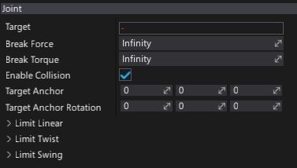

D6 Joint
D6 Joint is the most customizable type of joint. This joint type can be used to create all other built-in joint types, and to design your own custom ones, but is less intuitive to use. Allows a specification of a linear constraint (for example for a slider), twist constraint (rotating around X) and swing constraint (rotating around Y and Z). It also allows you to constrain limits to only specific axes or completely lock specific axes.
Properties

| Property | Description |
|---|---|
| Target | The target actor for the joint. It has to be RigidBody or CharacterController. |
| Break Force | Determines the maximum force the joint can apply before breaking. Broken joints no longer participate in physics simulation. |
| Break Torque | Determines the maximum torque the joint can apply before breaking. Broken joints no longer participate in physics simulation. |
| Enable Collision | Determines whether a collision between the two bodies managed by the joint is enabled. |
| Target Anchor | This is the relative pose which locates the joint frame relative to the target actor. |
| Target Anchor Rotation | This is the relative pose rotation which locates the joint frame relative to the target actor. |
| Limit Linear | Determines the linear limit used for constraining translation degrees of freedom. See LimitLinear to learn more. |
| Limit Twist | Determines the angular limit used for constraining the twist (rotation around X) degree of freedom. See LimitAngularRange to learn more. |
| Limit Swing | Determines the cone limit used for constraining the swing (rotation around Y and Z) degree of freedom. See LimitConeRange to learn more. |